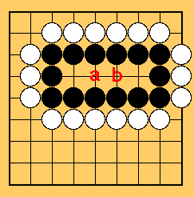

Table Of Contents
Table Of Contents
Though black has three spaces in the middle, it forms only one eye so far.
Therefore, you must make two eyes by making a partition there.
If you don't, white will play where black should have played.
A Go Proverb -Your vital spot is also the opponent's one.
As you can see, if your territory is too small, you will live a hard life.
Always try to make your territory large enough and not to get surrounded.

In this case, you don't need to make a partition.
If white makes a move at a, respond to it by making a move at b.
If white plays b, reply it by a.
Thus, you can always make two eyes even if white tries to attack.
However, if you ignore the white's attack, white will play both a and
b.
In that case, you have only one eye and will eventually be dead.
 Next
Next Home
Home